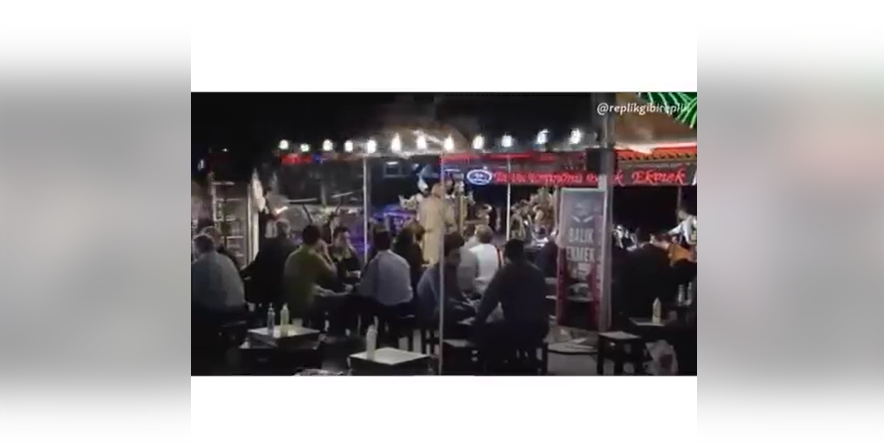
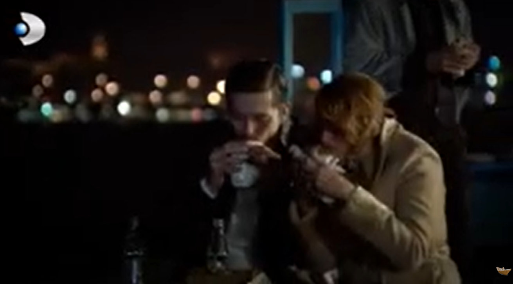
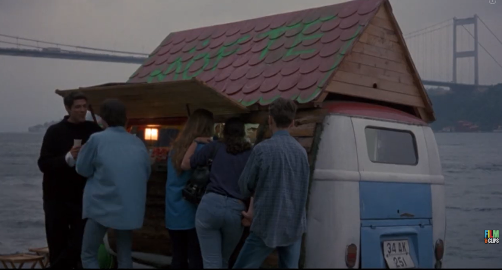
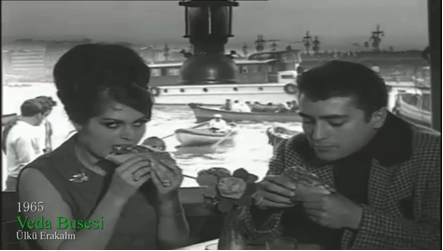

Dizi-Film-Şarkı
Eminönü Balık Ekmek’in Yeşilçam’dan günümüze uzanan yolculuğuna; unutulmaz dizi sahneleri, sinema filmleri ve şarkılar eşliğinde tanıklık edin.
Eminönü Balık Ekmek’in Yeşilçam’dan günümüze uzanan yolculuğuna; unutulmaz dizi sahneleri, sinema filmleri ve şarkılar eşliğinde tanıklık edin.



